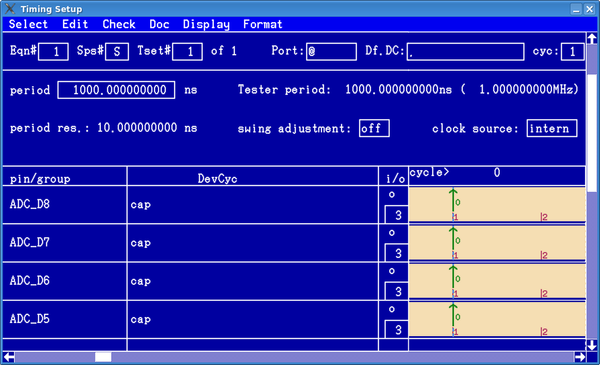

Setting up the Timing for Sequential Capturing
If you want to use sequential capturing on a Pin Scale system, the channel used for capturing has to be set up to work in STD (standard) mode. If the channel is in FAST mode, sequential capturing is not available. Similarly, you cannot use a wavetable in the native Smart Scale format for sequential capturing on a Smart Scale system. The wavetable must be coded in the modified standard format.
If using the Sequential Capture Mode, capturing will be performed on
- edge 1 in Standard Resolution Mode
- edge 1 and edge 4 in Double Resolution Mode
This means, that you have to set up an edge compare on these edges to define when the received value of the pin is to be captured.
The figure below shows a typical timing for digital capture pins, using Standard Resolution Mode. Alternatively, you can set up a corresponding wavetable for capturing, when using equation based setup.

Please note that for all capture pins in the figure above (ADC_D8 - ADC_D5) edge 1 is set up as "compare to low". This is good practice when capturing data, as explained next.
Setting up the Levels describes how the captured value of each capture pin is determined by the comparison against the level thresholds.
The overall pass/fail result of the capture test, however, is derived from the values received during capturing and the expected values. If only one mismatch between received and expected value occurs during the capturing, the overall result of the test will be a fail.
However, when performing digital capturing, the data to be captured in most applications cannot be fully predicted. Thus, the receive values cannot be fully determined, and a pass/fail resulting from a comparison of captured and expected data would be of no significance. This is normally not a problem, because during capturing, the data typically only gets collected, and will be analyzed after the capturing is complete.
If the expected values are not known anyway, it is advisable for debugging purposes, to set all expected values to "low", as shown in the example of the figure above, or all to "high". This way, it will be possible to also execute the capture pattern as a normal functional test and deduce meaningful information for debugging from the error map.
The following list summarizes some further points to consider and some tips for an efficient use of sequential Digital Capture.
- If you do not explicitly set up edge 1 (and edge 4 in Double Mode), data capturing will still be performed at time zero of the cycle, as by default each undefined edge is positioned at 0.
- When using Double Mode, the edges 1 and 4 must be placed with a minimum distance of half a test system period.
- It is advisable to define a device cycle called "capt" or similar, that only contains the
waveform for capturing.
This helps when defining the vectors.
- If a fail result of a testsuite that executes capturing is not acceptable, you can either set all edge 1 (and edge 4) compares to "Do not care" (X), or activate the testsuite flag "set pass" of the testsuite that performs the capture test.
Functional changes
- Introduced before SmarTest 6.3.2